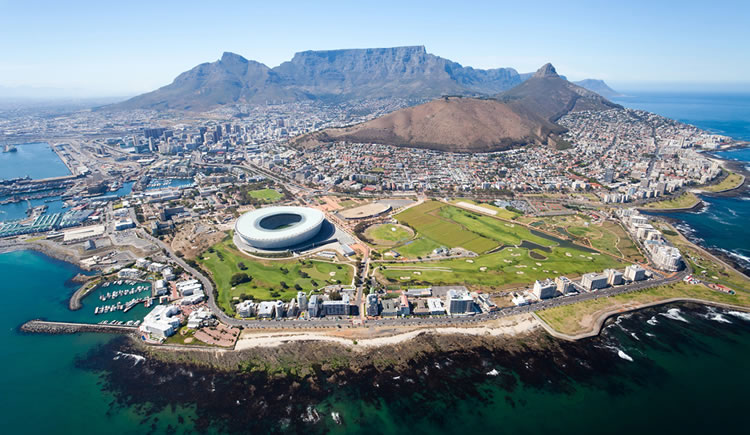
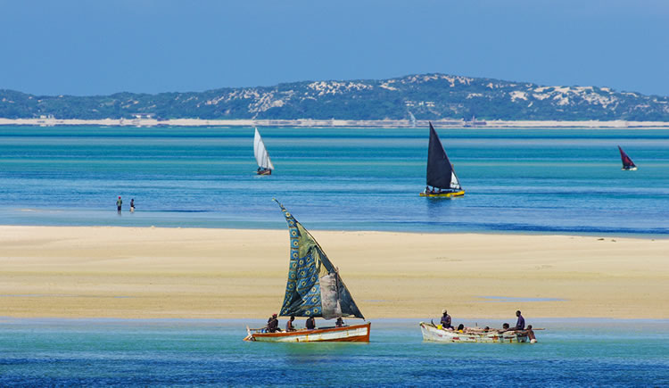
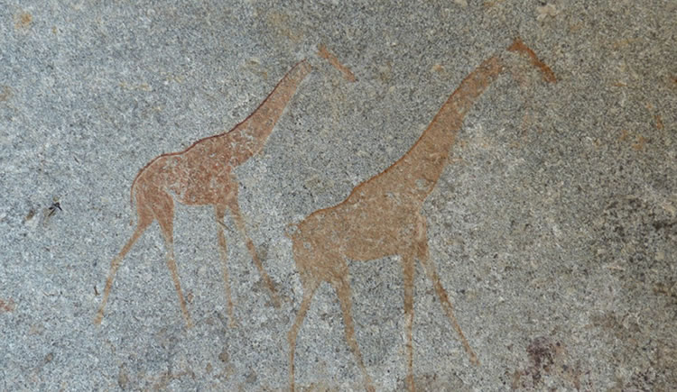
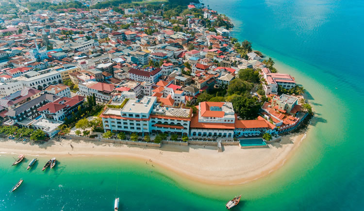

1. África do Sul
As atrações turísticas mais populares e importantes são as que auxiliam na preservação da natureza, o que inclui ecoturismo e safáris fotográficos. Um exemplo é o Parque Nacional Kruger, um dos mais importantes e com melhor estrutura para turistas. Lá é possível encontrar os animais mais icônicos, como leões, elefantes, leopardos e os rinocerontes. Não deixe de incluí-lo em seu roteiro África do Sul!
2. Moçambique
Moçambique fica no nordeste da África. O país é banhado pelo Oceano Índico e possui quase 30 milhões de habitantes. Grande parte de sua economia é baseada na agricultura, que está crescendo juntamente com o seu potencial turístico. Apesar de o seu Índice de Desenvolvimento Humano (IDH) ser baixo, ele se encontra em rápida ascensão — o que acontece, em parte, por causa dos investimentos que recebe de países como o Brasil, Portugal e a África do Sul. Sua única língua oficial é o português, comumente falado como segunda língua, sendo as mais populares o macua, o tsonga e o sena. A moeda oficial é o metical de Moçambique.
3. Zimbabwe
Zimbabwe acaba de sair de uma série de crises, instabilidades políticas, econômicas e hiperinflações da última década. Por isso, apesar de o país ainda estar crescendo, a evolução não acontece tão rapidamente quanto em outras nações africanas.
4. Tanzânia
A República Unida da Tanzânia é composta por 26 regiões e surgiu com a União entre Tanganica e Zanzibar, em 1964. Curiosamente, Zanzibar é o local onde Freddie Mercury nasceu! A Tanzânia fica a sudeste do Egito, norte de Moçambique e é banhada pelo Oceano Índico, tendo um clima tropical semiárido. Usa-se como moeda oficial o xelim tanzaniano. As línguas oficiais são o suaíli e o inglês. Destas, o inglês é mais usado comercialmente, enquanto o suaíli foi oficializado para unificar os povos que falam quase 100 línguas bantu. Um dos pontos muito visitados por turistas é a Catarata Kalambo, próxima ao lago Tanganica, de mais de duzentos metros de queda d’água. Também recebem muita atenção o Arquipélago de Zanzibar, com deliciosas especiarias e ótimas praias, e o monte Kilimanjaro, um dos pontos mais altos da África.